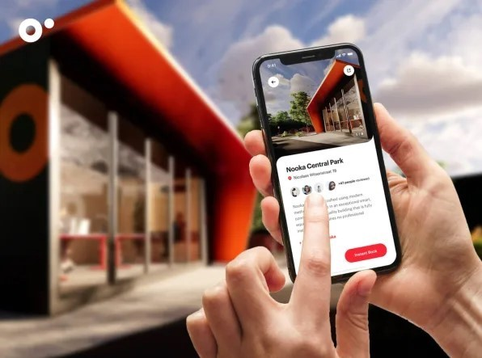

En un mundo donde el trabajo remoto ha ganado protagonismo, el entorno se ha convertido en un valor fundamental. En este contexto, Nooka ha encontrado una respuesta innovadora para la comunidad al ofrecer micro oficinas en renta instaladas estratégicamente en parques y condominios, así como también en centros comerciales y aeropuertos, en toda Irlanda, Rumania, Países Bajos e Italia.
Con el lanzamiento de Nooka en 2020, la empresa se ha dedicado a crear espacios de trabajo flexibles que se adaptan a las necesidades de los trabajadores remotos y aquellos que optan por un esquema híbrido entre la oficina y el hogar. La propuesta de esta empresa es ofrecer espacios de trabajo inteligentes y cómodos para que las personas puedan trabajar de la mejor manera posible. Cuentan con inteligencia para regular la temperatura e iluminación desde una app, escritorios y wifi de alta velocidad.
Estas pequeñas estructuras pueden comprarse o alquilarse y se instalan fácilmente en cualquier lado. La presencia de estas micro oficinas en lugares públicos como centros comerciales, plazas y parques fomenta la conexión con la comunidad y promueve un sentido de pertenencia compartida. El alquiler actualmente está alrededor de 4 euros por hora, dependiendo del tamaño y la ubicación.
La aplicación móvil de Nooka es una herramienta que facilita a los usuarios el acceso a la ubicación de las micro oficinas disponibles en su área y reservarlas según sus necesidades. Esta funcionalidad facilita la colaboración y la interacción entre los trabajadores, creando oportunidades para establecer contactos profesionales y compartir experiencias en un ambiente amigable.
El objetivo de Nooka trasciende el mero negocio de las micro oficinas en renta. La empresa busca fomentar una cultura de apoyo mutuo y cooperación en la comunidad de trabajadores remotos. A través de su enfoque en la mirada de comunidad y solidaridad, Nooka promueve la idea de que el trabajo no tiene que ser solitario, sino que puede ser una experiencia enriquecedora en la que el entorno natural, las conexiones humanas y el apoyo mutuo desempeñen un papel central. Desde Bindi creemos que un entorno inspirador es clave para desarrollar el potencial, mantener un buen ánimo y estimular la creatividad dentro del área laboral.
Nooka ha logrado establecer una red de micro oficinas en renta que va más allá de la simple provisión de espacios de trabajo. Su enfoque en la mirada de comunidad y solidaridad ha creado un entorno en el que los trabajadores remotos pueden encontrar un equilibrio entre la comodidad de su hogar y la necesidad de interacción social. De esta manera, se ha convertido en un ejemplo inspirador de cómo la innovación puede promover la conexión humana y el sentido de pertenencia en la sociedad actual.
¿Cómo podemos llevar esta propuesta a nuestro país?